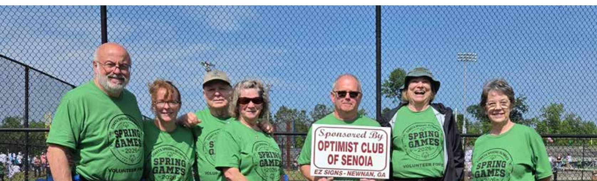
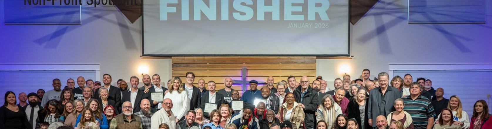
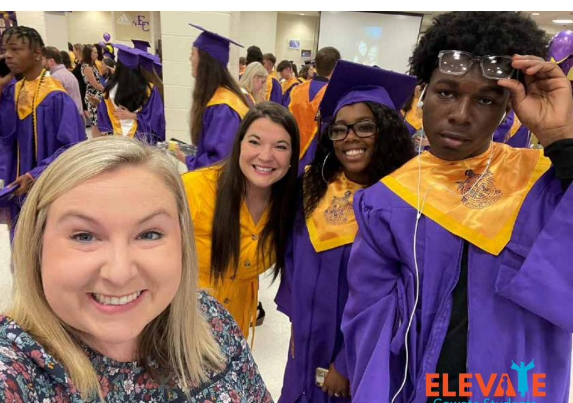
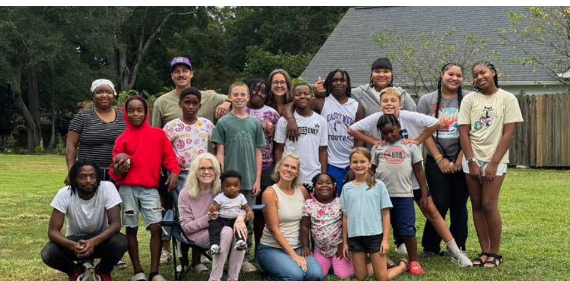
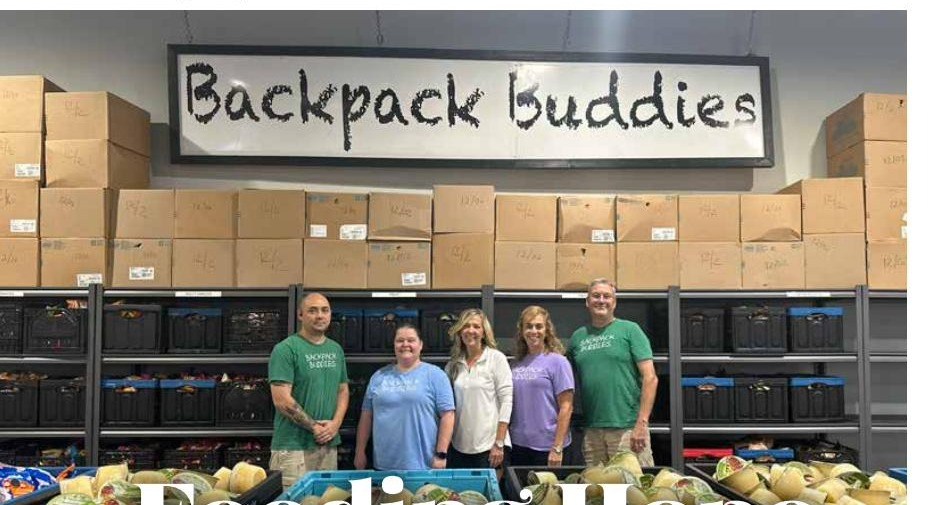
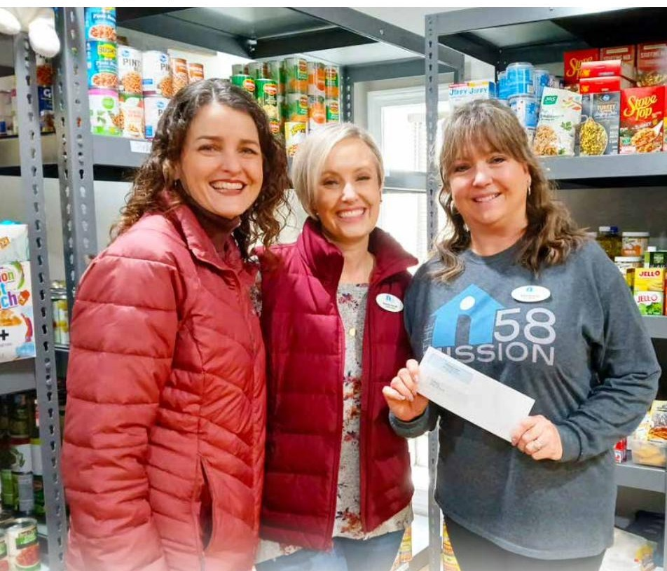

Every issue, we uplift a local nonprofit making a real difference — and give you a way to help.

How the Senoia Optimist Club continues to invest in Senoia's next generation
Chartered in 1985, the club embraces the Optimist International motto "Friend of Youth." Scholarships, the annual Fish Derby at Lake Marimac, Taste of Senoia, and Little Free Libraries — the list is long because the club looks for need wherever it exists. Just over 30 members today, with longtime member Hal Sewell recently celebrating 41 years of service.

How A Better Way Ministries is changing lives through service, structure, and redemption
Founded in 2005 by John Barrow — who found the seeds of this ministry during an 18-month stretch in solitary confinement — A Better Way has spent more than two decades helping men overcome addiction through faith, discipline, and brotherhood. What began in a farmhouse with five men has impacted thousands of lives across Georgia.

How ELEVATE Coweta Students is transforming lives — one student at a time
ELEVATE stepped into its independent mission in 2020, choosing to stay local rather than operate under a national umbrella. That means responding to needs the moment they emerge in Coweta County schools — immediately, personally, and relationally, not filtered through national priorities.

More than a program — a family that walks alongside families
What began roughly 23 years ago as a simple tutoring effort, founded by Linda Stankovich of Crossroads Church, has grown into something deeper. Nearly two decades later, volunteers are now walking alongside parents who were once children in the original program themselves — second-generation families, still known by name.

How Coweta County comes together to make sure no child goes hungry
Founded in 2011 by April Anderson after a single question at a conference — "If the doors of your church closed tomorrow, would your community even notice?" — Backpack Buddies started with 20 children at two schools. Today it provides weekend and break-time food for nearly 2,000 students across Coweta County every week.

i58 Mission — restoring dignity, sharing Jesus, and loving like neighbors
It started with an Angel Tree drive. Karhma Novak expected to buy gifts and drop them in a box — instead she delivered them in person and found a family that needed far more. What began with a few calls to friends turned her own home into a distribution center. Out of that beautiful chaos, i58 Mission was born.